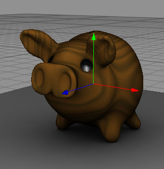

Bake Texture Tag
Use this tage if you want to bake lightning or procedural texture into a texture map which can be used later on real time 3D engines. To use it just select a polygon object and call the "Render->Bake Texture" menu command. That will add a "Bake Texture" tag to your selected polygon object. Now you can make your setting in the "Bake Texture" tag. Once done call again the "Render->Bake Texture" menu command. This time Cheetah3D will start the texture baking rendering job in the Render Manager. Once the rendering job is completed you can save the image.
Texture or Lightmap baking is mainly used by game developers to bake radiosity lightning or procedural materials into textures which then can be used in games.
|
|
 |

|
|
1. Pig rendered with radiosity in the raytracer.
|
2. Light information an wood material baked into a texture
|
3.The baked texture applied to the pig. Now also the wood material and the radiosity shading is can be seen in the OpenGL preview.
|
Attention: You can only add a render tag to polygon objects. Since these are the only objects which have editable UV coords.
Properties
- bake to: Defines if UV set which will be used for the baking job. Normally UV set 2 will be used to bake lightmaps.
- texture size: Defines the size the of texture into which will be baked.
- pixel boarder: Extends the geometry boarders of the baked mesh. That can help to reduce artifacts when using the baked texture in OpenGL application.
- background: The color of the background in the baked texture.
- baking UV coords: Calculates non-overlapping UV coords in the selected UV set (bake to property). This unwrapping isn't perfect but it is a good point to start of.
- color: Bakes the color light channel into the texture.
- ambient: Bakes the ambient light channel into the texture.
- diffuse: Bakes the diffuse light channel into the texture.
- emission: Bakes the emission light channel into the texture.
- bumps: Bakes the bumps map channel into the texture.
- radiosity: Bakes the radiosity light channel into the texture.
- caustics: Bakes the caustics light channel into the texture.